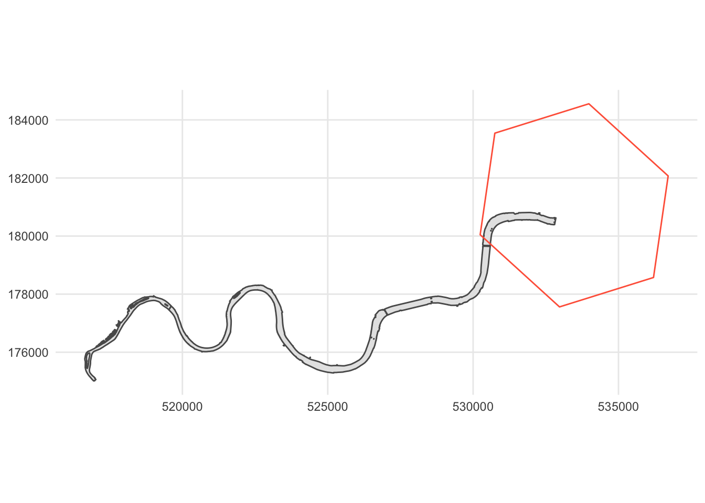

## Loading required package: h3using("osmextract","kableExtra","ggplot2","sf","tidyverse","knitr","h3")
options(scipen = 999)# Index a lat/lng point to an H3 index
# modify 'coords' for analysis on a different area
# helper websites #
# H3 interactive map: https://wolf-h3-viewer.glitch.me/
# Point finder: http://bboxfinder.com/
coords <- c(51.512468,-0.117449) # lat,lng EPSG: 4326 - WGS 84
# define resolution (lower resolution to create a larger study area)
# helper website
# Table of Cell Areas for H3 Resolutions: https://h3geo.org/docs/core-library/restable/
res <- 6
# get hex id
hexidsa <- geo_to_h3(coords, res)
# get hex polygon geometry
hexpolsa <- h3_to_geo_boundary_sf(hexidsa) %>%
# add hexid column
mutate(hexid = hexidsa)
# get hex polygon geometries with centres contained in a given polygon at res = 12
hexid12 <- polyfill(hexpolsa, res = 12)
# get res = 12 polygons
hexpol12 <- h3_to_geo_boundary_sf(hexid12) %>%
# add hexid column
mutate(hexid = hexid12)# check/create Output directory
mainDir <- getwd()
subDir <- paste0("osm-data-",hexidsa)
if (file.exists(subDir)){
setwd(file.path(mainDir))
} else {
dir.create(file.path(mainDir, subDir))
setwd(file.path(mainDir))
}
# get data
# Download the data to osm-data folder.
oe_get("London", download_directory = subDir, stringsAsFactors = FALSE, extra_tags = c("water","railway"), download_only = TRUE, skip_vectortranslate = TRUE)## No exact match found for place = London and provider = geofabrik. Best match is Jordan.
## Checking the other providers.## An exact string match was found using provider = bbbike.## The chosen file was already detected in the download directory. Skip downloading.## [1] "/Users/nicolas/Documents/Q_GitHub/t_city/osm-data-86194ad37ffffff/geofabrik_London.osm.pbf"# st_layers("~/Documents/Q_GitHub/t_city/geofabrik_London.osm.pbf")
# oe_get_keys("~/Documents/Q_GitHub/t_city/geofabrik_London.osm.pbf", layer = "multipolygons")pbf <- list.files(path = file.path(mainDir, subDir), pattern = "*.pbf")
dir <- file.path(mainDir, subDir, pbf)
# hexpolsa is the polygonal boundary
# polygon geometries
oe_read(dir, layer = "multipolygons", extra_tags = "water", boundary = hexpolsa, boundary_type = "spat") -> pols## Start with the vectortranslate operations on the input file!## 0...10...20...30...40...50...60...70...80...90...100 - done.## Warning in CPL_gdalvectortranslate(source, destination, options, oo, doo, : GDAL
## Message 1: organizePolygons() received an unexpected geometry. Either a polygon
## with interior rings, or a polygon with less than 4 points, or a non-Polygon
## geometry. Return arguments as a collection.## Finished the vectortranslate operations on the input file!## Reading layer `multipolygons' from data source
## `/Users/nicolas/Documents/Q_GitHub/t_city/osm-data-86194ad37ffffff/geofabrik_London.gpkg'
## using driver `GPKG'
## Simple feature collection with 47853 features and 26 fields
## Geometry type: MULTIPOLYGON
## Dimension: XY
## Bounding box: xmin: -0.5103751 ymin: 51.28676 xmax: 0.3340155 ymax: 51.69187
## Geodetic CRS: WGS 84# lines geometries
oe_read(dir, layer = "lines", extra_tags = "railway", boundary = hexpolsa, boundary_type = "spat") -> lines## Start with the vectortranslate operations on the input file!## 0...10...20...30...40...50...60...70...80...90...100 - done.## Finished the vectortranslate operations on the input file!## Reading layer `lines' from data source
## `/Users/nicolas/Documents/Q_GitHub/t_city/osm-data-86194ad37ffffff/geofabrik_London.gpkg'
## using driver `GPKG'
## Simple feature collection with 52490 features and 10 fields
## Geometry type: LINESTRING
## Dimension: XY
## Bounding box: xmin: -0.2482626 ymin: 51.35111 xmax: 0.1561341 ymax: 51.5691
## Geodetic CRS: WGS 84# polygons
glimpse(pols)## Rows: 47,853
## Columns: 27
## $ osm_id <chr> "2171", "28934", "51781", "51800", "51805", "51806", "5182…
## $ osm_way_id <chr> NA, NA, NA, NA, NA, NA, NA, NA, NA, NA, NA, NA, NA, NA, NA…
## $ name <chr> "South Bank Technopark", "River Thames", "City of Westmins…
## $ type <chr> "multipolygon", "multipolygon", "boundary", "boundary", "b…
## $ aeroway <chr> NA, NA, NA, NA, NA, NA, NA, NA, NA, NA, NA, NA, NA, NA, NA…
## $ amenity <chr> NA, NA, NA, NA, NA, NA, NA, NA, NA, NA, NA, NA, NA, NA, NA…
## $ admin_level <chr> NA, NA, "8", "6", "8", "8", "8", "8", NA, NA, NA, NA, NA, …
## $ barrier <chr> NA, NA, NA, NA, NA, NA, NA, NA, NA, NA, NA, NA, NA, NA, NA…
## $ boundary <chr> NA, NA, "administrative", "administrative", "administrativ…
## $ building <chr> "yes", NA, NA, NA, NA, NA, NA, NA, NA, NA, NA, NA, NA, "ye…
## $ craft <chr> NA, NA, NA, NA, NA, NA, NA, NA, NA, NA, NA, NA, NA, NA, NA…
## $ geological <chr> NA, NA, NA, NA, NA, NA, NA, NA, NA, NA, NA, NA, NA, NA, NA…
## $ historic <chr> NA, NA, NA, NA, NA, NA, NA, NA, NA, NA, NA, NA, NA, NA, NA…
## $ land_area <chr> NA, NA, NA, NA, NA, NA, NA, NA, NA, NA, NA, NA, NA, NA, NA…
## $ landuse <chr> NA, NA, NA, NA, NA, NA, NA, NA, NA, NA, NA, NA, NA, NA, NA…
## $ leisure <chr> NA, NA, NA, NA, NA, NA, NA, NA, NA, NA, NA, NA, "park", NA…
## $ man_made <chr> NA, NA, NA, NA, NA, NA, NA, NA, NA, NA, NA, NA, NA, NA, NA…
## $ military <chr> NA, NA, NA, NA, NA, NA, NA, NA, NA, NA, NA, NA, NA, NA, NA…
## $ natural <chr> NA, "water", NA, NA, NA, NA, NA, NA, "water", "water", NA,…
## $ office <chr> NA, NA, NA, NA, NA, NA, NA, NA, NA, NA, NA, NA, NA, NA, NA…
## $ place <chr> NA, NA, NA, NA, "borough", NA, NA, NA, NA, NA, "city", NA,…
## $ shop <chr> NA, NA, NA, NA, NA, NA, NA, NA, NA, NA, NA, NA, NA, NA, NA…
## $ sport <chr> NA, NA, NA, NA, NA, NA, NA, NA, NA, NA, NA, NA, NA, NA, NA…
## $ tourism <chr> NA, NA, NA, NA, NA, NA, NA, NA, NA, NA, NA, NA, NA, NA, NA…
## $ water <chr> NA, "river", NA, NA, NA, NA, NA, NA, NA, NA, NA, "river", …
## $ other_tags <chr> "\"operator\"=>\"London South Bank University\",\"wikidata…
## $ geometry <MULTIPOLYGON [°]> MULTIPOLYGON (((-0.1021346 ..., MULTIPOLYGON …# lines
glimpse(lines)## Rows: 52,490
## Columns: 11
## $ osm_id <chr> "330341", "330437", "330481", "331357", "331680", "367991",…
## $ name <chr> "Penton Rise", "St. John Street", "City Road", "Gray's Inn …
## $ highway <chr> "trunk", "primary", "trunk", "trunk", "primary", "residenti…
## $ waterway <chr> NA, NA, NA, NA, NA, NA, NA, NA, NA, NA, NA, NA, NA, NA, NA,…
## $ aerialway <chr> NA, NA, NA, NA, NA, NA, NA, NA, NA, NA, NA, NA, NA, NA, NA,…
## $ barrier <chr> NA, NA, NA, NA, NA, NA, NA, NA, NA, NA, NA, NA, NA, NA, NA,…
## $ man_made <chr> NA, NA, NA, NA, NA, NA, NA, NA, NA, NA, NA, NA, NA, NA, NA,…
## $ railway <chr> NA, NA, NA, NA, NA, NA, NA, NA, NA, NA, NA, NA, NA, NA, NA,…
## $ z_order <int> 8, 7, 8, 8, 7, 3, 4, 4, 7, 7, 7, 3, 3, 0, 8, 3, 3, 4, 3, 3,…
## $ other_tags <chr> "\"bicycle\"=>\"yes\",\"cycleway:left\"=>\"lane\",\"foot\"=…
## $ geometry <LINESTRING [°]> LINESTRING (-0.114121 51.53..., LINESTRING (-0.1…# split polygons into relevant polygonal keys
# define keys
keys <- c("natural") # off-test: "building", "landuse", "water", # function to create list of objects according to relevant layers
# define dataframe
df <- pols
polslist <- list()
for (i in keys) {
df %>%
# collapse ids to create a unique id label
mutate(osm_nid = case_when(is.na(osm_id) ~ osm_way_id,
TRUE ~ osm_id)) %>%
# select key and keep osm id
select(i, osm_nid) %>%
# drop NAs
drop_na(.) %>%
# make valid polygons (repair those with self-intersection?)
st_make_valid() -> vpol
# id of remaining invalid geometries
which(st_is_valid(vpol, reason = TRUE) != "Valid Geometry") -> invalid
# ghost integer to ease slice
c(invalid, 999999) -> invalid
vpol %>%
# remove invalid geometries
slice(-invalid) %>%
# calculate area (remove units and round to 1 digit)
mutate(osmf_area = round(as.numeric(st_area(.)),1)) -> vpol
# get only the non-empty geometries
vpol[!st_is_empty(vpol), , drop=FALSE] -> polslist[[i]]
}## Note: Using an external vector in selections is ambiguous.
## ℹ Use `all_of(i)` instead of `i` to silence this message.
## ℹ See <https://tidyselect.r-lib.org/reference/faq-external-vector.html>.
## This message is displayed once per session.# check reduction of geometries 'not-valid' & 'not-repaired'
# before st_make_valid
pols %>%
select(natural) %>%
filter(!is.na(natural)) %>%
nrow(.)## [1] 285# result: 285# after st_make_valid
length(polslist[["natural"]][["natural"]])## [1] 285# result: 285# check extent of OSM features in relation to study area hexagon
polslist[["natural"]] %>%
st_transform(27700) %>%
filter(osm_nid == 28934) %>%
ggplot() +
geom_sf() +
geom_sf(data = hexpolsa, fill=NA, col="tomato") +
theme_minimal() +
coord_sf(datum = 27700)
# vector of value counts > 0.05%
polslist[["natural"]] %>%
st_drop_geometry() %>%
count(natural) %>%
# percentage
mutate(pc = 100* (n / sum(n))) %>%
arrange(desc(n)) -> s_nat
s_nat %>%
kable(digits = 2) %>%
kable_styling()| natural | n | pc |
|---|---|---|
| water | 134 | 47.02 |
| wood | 73 | 25.61 |
| scrub | 35 | 12.28 |
| wetland | 23 | 8.07 |
| beach | 10 | 3.51 |
| shrubbery | 4 | 1.40 |
| mud | 3 | 1.05 |
| sand | 2 | 0.70 |
| rock | 1 | 0.35 |
s_nat %>%
filter(pc > 0.05) %>%
pull(natural) -> k_nat
# reclassify values below threshold to 'other'
# create 'key' object from list
natural <- polslist[["natural"]] %>%
mutate(natural = case_when(natural %in% k_nat ~ natural,
TRUE ~ "other"))k_nat## [1] "water" "wood" "scrub" "wetland" "beach" "shrubbery"
## [7] "mud" "sand" "rock"# set precision
# use crs=3857 to speed up intersection
hexpol12 %>%
st_transform(crs=3857) %>%
st_set_precision(units::set_units(10, nm)) -> hexpol12
# set precision and create objects by key
natural %>%
st_transform(crs=3857) %>%
st_set_precision(units::set_units(10, nm)) %>%
# after crs transformation is necessary to make valid again
st_make_valid() -> natural
# intersect hexagons with polygon layer
st_intersection(hexpol12, natural) -> hp_natural## Warning: attribute variables are assumed to be spatially constant throughout all
## geometrieshp_natural %>%
st_drop_geometry() %>%
count(natural) %>%
arrange(desc(n)) %>%
kable() %>%
kable_styling()| natural | n |
|---|---|
| water | 9811 |
| wood | 1404 |
| wetland | 1169 |
| scrub | 102 |
| mud | 86 |
| beach | 25 |
| rock | 2 |
# features 'not touching' hexpol6 are read! e.g.: osm_nid = 316996080, natural=shrubbery
# unique values in OSM 'unclipped' data are more than values clipped to hexpol12
#mapview(natural) + mapview(hexpolsa, fill=NA)# create summary table of osm_ids by hexagon
hp_natural %>%
st_drop_geometry() %>%
select(hexid, osm_nid) %>%
group_by(hexid) %>%
mutate(osm_nm = paste0("osm_nid_", row_number(), sep = "")) %>%
# osm ids of values as variables
pivot_wider(names_from = osm_nm, values_from = osm_nid) -> h_natural_onid
# create summary table of osm areas by hexagon
hp_natural %>%
st_drop_geometry() %>%
select(hexid, osmf_area) %>%
group_by(hexid) %>%
mutate(osm_nm = paste0("osm_nid_", row_number(), "_area", sep = "")) %>%
# osm areas of values as variables
pivot_wider(names_from = osm_nm, values_from = osmf_area) -> h_natural_onid_area
# create summary table of osm features values by hexagon
hp_natural %>%
st_drop_geometry() %>%
select(hexid, natural) %>%
group_by(hexid) %>%
mutate(osm_nm = paste0("osm_nid_", row_number(), "_value", sep = "")) %>%
# osm features values as variables
pivot_wider(names_from = osm_nm, values_from = natural) -> h_natural_onid_value
# join tables
h_natural_onid %>%
left_join(h_natural_onid_area, by = "hexid") %>%
left_join(h_natural_onid_value, by = "hexid") -> h_natural_st
# see example of hexagon with most 'values'
h_natural_st %>%
filter(!is.na(osm_nid_5_area)) Export OSM legacy data CSV file
# layer (key) name
layer <- natural %>%
st_drop_geometry() %>%
colnames() %>%
first()
# check/create Output directory
subDir <- paste0("csv-",hexidsa)
if (file.exists(subDir)){
setwd(file.path(mainDir))
} else {
dir.create(file.path(mainDir, subDir))
setwd(file.path(mainDir))
}
# write csv of OSM legacy data
write_csv(h_natural_st, file = paste0(mainDir, "/", subDir, "/", hexidsa, "-", layer, "-osm-legacy.csv"))# create statistics by hexagon
hp_natural %>%
# transfrom CRS 3857 -> 4326
st_transform(4326) %>%
# calculate hexagons clipped area
mutate(hc_area = round(as.numeric(st_area(.)),1)) %>%
st_drop_geometry() %>%
select(hexid, natural, hc_area) %>%
# areas of values as variables (areas of equal value are aggregated with 'values_fn = sum')
pivot_wider(names_from = "natural", values_from = "hc_area", values_fn = sum, values_fill = 0) %>%
# add prefix to columns 2 onwards
rename_with( ~ paste0("natural_", .x), .cols = 2:ncol(.)) %>%
mutate_all( ~ replace(., is.na(.), 0)) %>%
# add total area adding equal value columns
mutate(total_area = rowSums(select(., starts_with("natural"))),
# diversity = number of columns where area > 0
diversity = rowSums(select(., starts_with("natural")) != 0)) -> hp_natural_stats
# join statistics to hexagons
hexpol12 %>%
left_join(hp_natural_stats, by="hexid") %>%
# transfrom CRS 3857 -> 4326
st_transform(4326) %>%
# calculate hexagons area
mutate(hex_area = round(as.numeric(st_area(.)),1)) %>%
# add percentage by column
mutate_at(vars(starts_with("natural")), funs(pc = round(./(hex_area * 0.01),1))) -> hex_natural## Warning: `funs()` was deprecated in dplyr 0.8.0.
## Please use a list of either functions or lambdas:
##
## # Simple named list:
## list(mean = mean, median = median)
##
## # Auto named with `tibble::lst()`:
## tibble::lst(mean, median)
##
## # Using lambdas
## list(~ mean(., trim = .2), ~ median(., na.rm = TRUE))
## This warning is displayed once every 8 hours.
## Call `lifecycle::last_lifecycle_warnings()` to see where this warning was generated.Export hexagon CSV file
# write csv WKT hexagon statistics
st_write(hex_natural, paste0(mainDir, "/", subDir, "/", hexidsa, "-", layer, "-hexstats.csv"), layer_options = c("GEOMETRY=AS_WKT","CREATE_CSVT=YES"), delete_dsn=TRUE)## Deleting source `/Users/nicolas/Documents/Q_GitHub/t_city/csv-86194ad37ffffff/86194ad37ffffff-natural-hexstats.csv' using driver `CSV'
## Writing layer `86194ad37ffffff-natural-hexstats' to data source
## `/Users/nicolas/Documents/Q_GitHub/t_city/csv-86194ad37ffffff/86194ad37ffffff-natural-hexstats.csv' using driver `CSV'
## options: GEOMETRY=AS_WKT CREATE_CSVT=YES
## Writing 117649 features with 18 fields and geometry type Polygon.data.frame(variable_name = c(
"WKT",
"hexid",
"natural_water",
"total_area",
"hex_area",
"natural_water_pc"),
variable_description = c(
"Well-known text representing vector geometry objects",
"Unique haxagon identifier according to H3 indexing",
"{key_value} pair, key is the 'layer' and value is one of the 'classes' (class can be > 1)",
"Sum of all values areas (or classes areas) in square meters",
"Total H3 hexagon area of resolution 12 in square meters",
"{key_value} percentage, proportion of the 'value' area from 'hex_area'"
)) -> cbook_hexstats
data.frame(variable_name = c(
"hexid",
"osm_nid_1",
"osm_nid_1_area",
"osm_nid_1_value"),
variable_description = c(
"Unique haxagon identifier according to H3 indexing",
"{osm_nid_X}, OSM unique id, 'X' is a correlative of OSM feature(s). 'nid' is the merge of 'osm_id' and 'osm_way_id'",
"{osm_nid_X_area} is the area of the corresponding 'X' OSM feature(s)",
"{osm_nid_X_value} is the 'value' of the corresponding 'X' OSM feature(s)"
)) -> cbook_osm_legacycbook_hexstats %>%
kable() %>%
kable_styling()| variable_name | variable_description |
|---|---|
| WKT | Well-known text representing vector geometry objects |
| hexid | Unique haxagon identifier according to H3 indexing |
| natural_water | {key_value} pair, key is the ‘layer’ and value is one of the ‘classes’ (class can be > 1) |
| total_area | Sum of all values areas (or classes areas) in square meters |
| hex_area | Total H3 hexagon area of resolution 12 in square meters |
| natural_water_pc | {key_value} percentage, proportion of the ‘value’ area from ‘hex_area’ |
cbook_osm_legacy %>%
kable() %>%
kable_styling()| variable_name | variable_description |
|---|---|
| hexid | Unique haxagon identifier according to H3 indexing |
| osm_nid_1 | {osm_nid_X}, OSM unique id, ‘X’ is a correlative of OSM feature(s). ‘nid’ is the merge of ‘osm_id’ and ‘osm_way_id’ |
| osm_nid_1_area | {osm_nid_X_area} is the area of the corresponding ‘X’ OSM feature(s) |
| osm_nid_1_value | {osm_nid_X_value} is the ‘value’ of the corresponding ‘X’ OSM feature(s) |